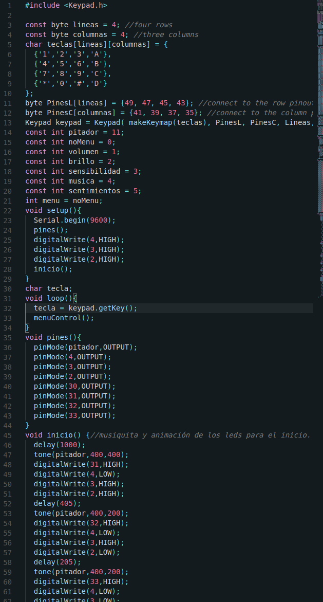

 Carol funciona con una placa Arduino Mega 2560, por lo que su código está escrito principalmente en c++, que es el lenguaje que usa Arduino. Aunque de los comandos que interaccionan con el PC se encarga un script escrito en Python que lee el monitior serial y ejecuta los comandos; el código en C++ solamente imprime comandos como "vol10" para cambiar el volumen a 10.
Físicamente se compone de un buzzer; para emitir sonidos, un led RGB que le coloqué con la intención de que sirviese para expresar; junto con el buzzer; algunas expresiones simples, cuatro leds de colores para indicar en qué parte del menú estás, un display de un dígito; que funciona, aunque no está en uso aún y sus dos ojos que, aunque parezcan simplemente decorativos, sirven como puentes en los raíles de la protoboard; que se encontraban rotos.
El menú se organiza de la siguiente manera: A, configura el volumen (Submenú A) y la sensibilidad del ratón (Submenú B). B, reproduce una playlist (botones 1, 2 y 3) y pausa o salta la canción hacia alante o hacia atrás (4, 5 o 6). C, menú de pruebas, sirve para activar las emociones, probar las canciones que toca Carol y realizar otras acciones puntuales de forma rápida para probarlo. D, reservado para los juegos que están por programar.
En un futuro me gustaría añadirle una pantalla (Ya sea led o lcd) y un micrófono para poder ejecutar comandos con la voz, ya que hay librerías que lo facilitan mucho.